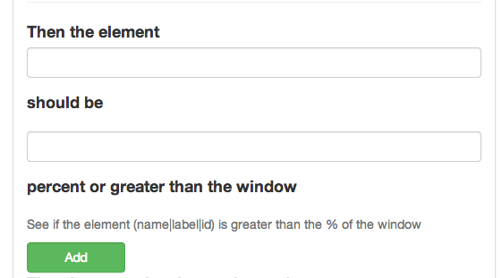

This step will help verify size of the element in % compared to the window.
So if this is the page you where testing
Then the %30 div would be your focus
You would use the jquery / dom path of the element you want to get the size of.
So the test would look like this
Feature: Test Content Sizes
Scenario: Test the Content is 30% of the window
Given I am on "http://saucelabs.com/test/guinea-pig"
Then the element "div#target" should be "30" percent or greater than the window